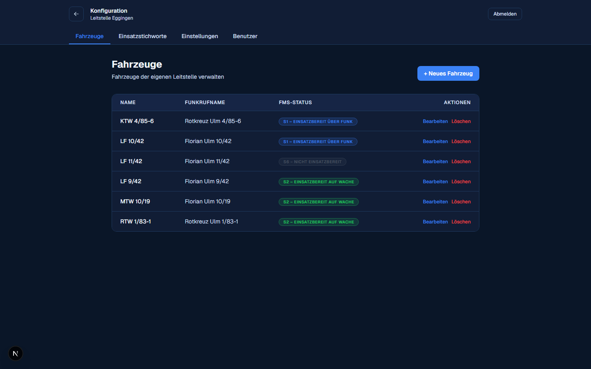
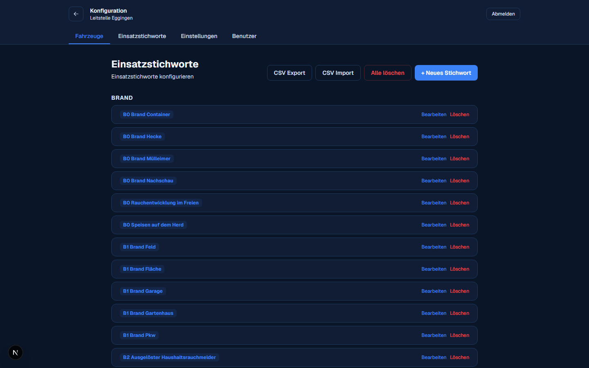
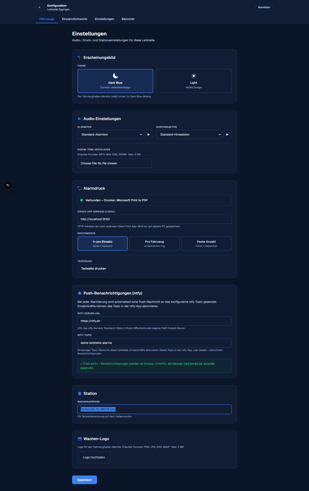
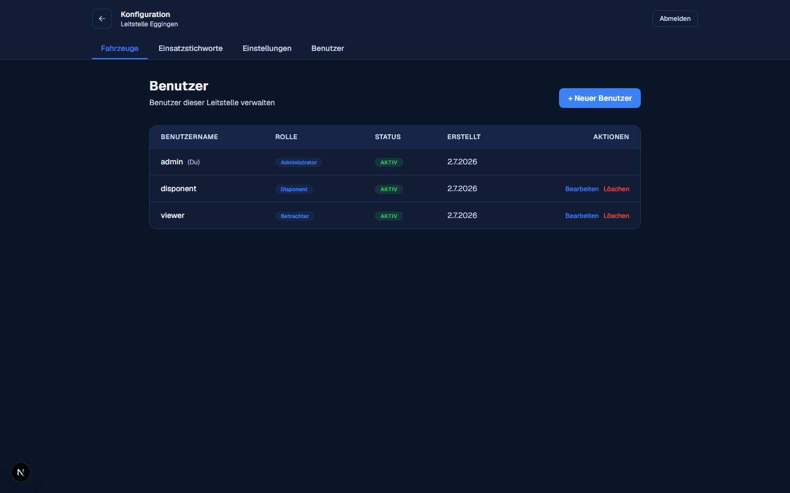
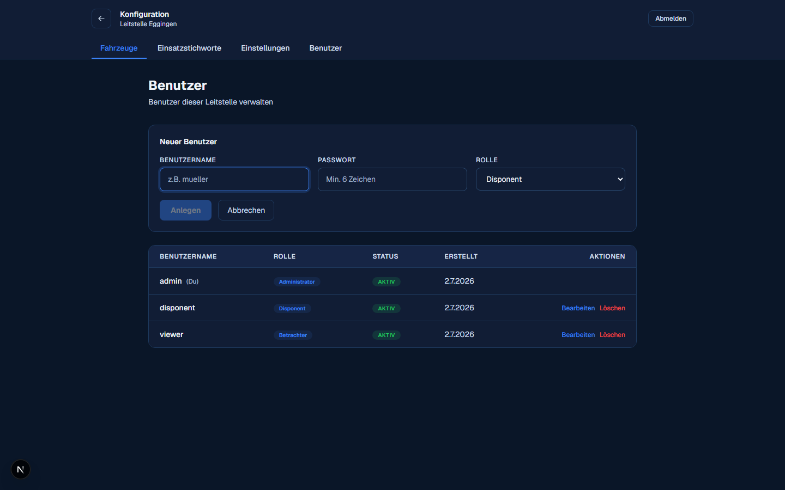

Verwaltung (Admin)
Über „Konfiguration“ auf der Monitorauswahl erreicht ihr als Admin vier Bereiche, mit denen sich eure Leitstelle einrichten lässt – am besten gleich nach der ersten Anmeldung.
Fahrzeuge
Hier legst du Fahrzeuge an, bearbeitest Name und Funkrufname oder löschst nicht mehr genutzte Fahrzeuge. Der aktuelle FMS-Status ist zur Info sichtbar, geändert wird er aber über die Fahrzeugkarten auf dem Dashboard – nicht hier.

Einsatzstichworte
Die Liste der Stichworte, die in der Einsatzerfassung vorgeschlagen werden, gruppiert nach Kategorie (Brand, Hilfeleistung, Rettung, Sonstiges). Neue Stichworte lassen sich einzeln anlegen oder komplett per CSV-Import einspielen; „CSV Export“ sichert den aktuellen Stand, „Alle löschen“ setzt die Liste zurück.

Format der CSV-Datei
Kein Komma, kein Semikolon, keine Kopfzeile – einfach eine Kategorie pro Zeile, gefolgt von ihren Stichworten (je eins pro Zeile), bis die nächste Kategorie beginnt. Leerzeilen dazwischen sind rein optisch und werden beim Import ignoriert.
-
Kategorie-Zeilen müssen exakt (Groß-/
Kleinschreibung ist egal)
Brand,Hilfeleistung,RettungoderSonstigeslauten – andere Kategorienamen gibt es nicht. - Zeilen vor der ersten erkannten Kategorie werden stillschweigend übersprungen.
- Stichworte, die es in ihrer Kategorie schon gibt, werden beim Import übersprungen statt doppelt angelegt.
- Die Datei sollte UTF-8 gespeichert sein (Excel- Exporte im Windows-Format werden ebenfalls erkannt).
Brand
B0 Brand
B2 Brand Gebäude
Hilfeleistung
H0 Hilfeleistung
H2 Hilfeleistung
Rettung
R0 Rettung
R2 Rettung
Sonstiges
S Testeinsatz FwBeispieldatei herunterladen (.csv)
Einstellungen
Zentrale Einstellungen der Leitstelle, in Abschnitten:
- Erscheinungsbild – Standard-Theme (der Alarmmonitor bleibt davon unberührt immer dunkel).
- Audio-Einstellungen – Alarmton und Durchsagenton auswählen oder eigene Töne (MP3/WAV/OGG/WEBM) hochladen.
- Alarmdruck – Adresse der lokalen Silent-Print-App, Druckmodus (1× pro Einsatz / pro Fahrzeug / feste Anzahl) und ein Testdruck-Button. Installation der App: Alarmdruck einrichten.
-
Push-Benachrichtigungen (ntfy) – Server-URL und
ein frei wählbares Topic (z. B.
deine-leitstelle-alarme), über das Einsatzkräfte Alarme direkt aufs Handy bekommen. Einrichtung auf dem Handy: Push-Benachrichtigungen (ntfy). - Station – Wachenadresse, die für die Routenberechnung auf dem Alarmmonitor genutzt wird.
- Wachen-Logo – Logo für den Alarmmonitor hochladen.

Benutzer
Benutzerkonten eurer Leitstelle anlegen, bearbeiten, deaktivieren oder löschen – z. B. für weitere Betreuer oder für die Jugendlichen selbst. Beim Anlegen vergebt ihr Benutzername, ein Startpasswort und die Rolle (Admin, Disponent, Betrachter oder ReadOnly). Details zu den Rollen: Rollen & Rechte.

